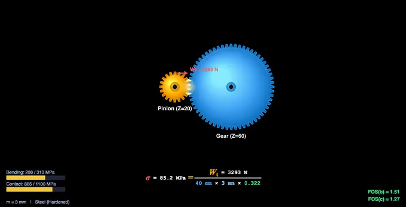
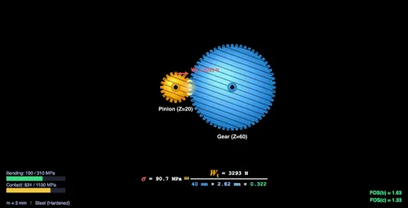
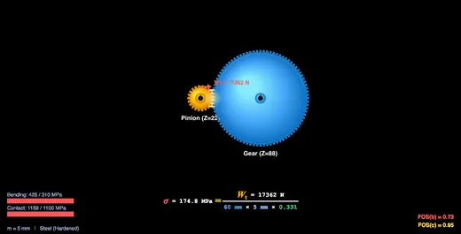

Gear Strength Calculator
3D Model — Gear Strength Calculator
Free AGMA gear strength calculator — find allowable load, transmissible power and safety factor from Lewis bending & contact stress. Spur & helical, SI/Imperial, interactive.
Lewis & AGMA Bending • Contact Stress • Safety Factor — Spur • Helical — Simulate • Explore • Practice • Quiz
Display Controls
Σ Lewis & AGMA equations — the formulas the simulator computes
Lewis bending stress: σ = Wt / (b × mn × Y) — tooth treated as a cantilever beam.
AGMA bending stress: σ = Wt × Ko × Kv × Ks × Km × KB / (b × mn × J) — Lewis with real-world correction factors.
AGMA contact stress: σc = Cp × √(Wt × Ko Kv Ks Km Cf / (b × d × I)).
Tangential force: Wt = (P × 1000) / v, where v = π × d × n / 60000.
Click Show Calculations on the canvas for the full step-by-step derivation using your current input values.
⚠ AGMA correction factors — what each K does
- Ko (Overload): shock loads from power source / driven machine. 1.0–1.75.
- Kv (Dynamic): internal dynamic loads tied to pitch line velocity and gear quality.
- Ks (Size): non-uniform stress in large teeth. Usually 1.0.
- Km (Load distribution): non-uniform load across face width from misalignment. 1.0–1.7.
- KB (Rim thickness): thin rim under tooth. 1.0 for most solid gears.
- Cf (Surface condition): contact-stress only. Affected by finish and residual stress.
This simulator uses Ko=1.25, Kv=1.20, Ks=KB=Cf=1.0, Km=1.20 — typical industrial values.
🎯 Safety factor targets — when is the design safe?
- FOS bending ≥ 1.5 — recommended for most industrial gears.
- FOS contact ≥ 1.0 — typical pitting threshold; aim higher for long life.
- FOS ≥ 2.5 — aerospace and high-reliability applications.
- FOS < 1.0 — design will fail; increase module, face width, or upgrade material.
The verdict badge above turns red (UNSAFE), amber (MARGINAL), or green (SAFE) based on your current FOS values.
💡 What-if coach — design intuition
- Stress too high? Increase module first (cubic effect on stress × geometry), then face width.
- FOS bending failing but contact OK? The pinion is the weaker link — add pinion teeth (raises Y) or upgrade pinion material.
- FOS contact failing? Material Cp and pitch diameter dominate. Use case-hardened steel or larger module.
- Speed-related noise? Switch to helical gears — engagement is gradual and Kv penalty drops.
- Heavy shock loading? Apply a higher Ko mentally; this simulator uses Ko=1.25.
1 Overview
The Gear Strength Calculator calculates Lewis bending stress, AGMA bending and contact stresses, and safety factors for spur and helical gear pairs. The interactive canvas shows the meshing pair with the live tangential-force vector and the classical Lewis equation rendered in textbook form, with the right-hand-side values rolling as you change inputs.
All calculations run in SI internally. The SI / Imperial unit toggle at the top converts every readout, slider value, canvas label, and the calculation modal so you can work in mm/N/MPa/kW or in/lbf/psi/hp without re-entering anything.
2 Getting Started — Action Bar & Presets
The fastest way to start is to click any of the presets (Automotive Pinion, Industrial Gearbox, High-Speed Spur, Heavy-Duty Slow, Light Plastic, Cast-Iron Pump). Each preset loads a realistic combination of module, teeth, face width, RPM, power, and material so you can see typical numbers immediately.
The action bar below the canvas exposes Undo (Ctrl+Z), Redo (Ctrl+Shift+Z), Export CSV, Export PNG (with watermark), and Reset to defaults. A first-time hint banner explains the same and auto-closes the moment you change anything.
3 Sliders, Steppers & Custom Material
Every parameter has both a slider for fast scrubbing and a stepper input [−] [text] [+] for precise typed values. Pressing Enter or tabbing out commits the value. Stepper values follow the active unit system, so in Imperial mode you can type the face width directly in inches.
The Material pills (Hardened Steel, Case-Hardened, Cast Iron, Bronze, Nylon) cover common gear materials. For a custom alloy, click + Custom Material in the preset bar — the modal accepts allowable bending stress, allowable contact stress, and elastic coefficient Cp, all in the active unit system.
4 Canvas Feature Toggles & Right-Click Menu
The four checkboxes (Lewis equation, Stress bars, Force vector, Grid) toggle individual canvas overlays so you can focus on one concept at a time. The Lewis equation overlay shows σ = Wt / (b × m × Y) with each variable in its own colour and the right-hand-side values updated live.
Right-click on the canvas for a context menu with: Export PNG, Export CSV, Copy Wt / bending / contact value to clipboard, Toggle grid, Toggle equation, and Reset. The menu clamps to the viewport so it never overflows the screen edge.
5 Show Calculation Modal
The blue Show Calculations button at the bottom-right of the canvas opens a step-by-step derivation in 8 stages: pitch diameter, pitch line velocity, tangential force, Lewis form factor lookup, Lewis bending stress, AGMA bending stress (with all correction factors substituted), AGMA contact stress, and the final safety factor verdict.
The modal rebuilds every time it opens, so it always reflects your current slider positions. Press Escape or click the backdrop to close it.
6 Explore, Practice & Quiz Modes
Explore mode organises 14 concepts into four categories (Fundamentals, Failure Modes, AGMA Factors, Materials) with descriptions, formulas, and worked examples. Practice generates random calculation problems with full step-by-step solutions when you check your answer. Quiz picks 5 questions from a pool of 15 covering MCQ and numeric problems.
7 Keyboard Shortcuts & Tips
- Ctrl+Z — Undo any state change (slider, preset, material, toggle).
- Ctrl+Shift+Z or Ctrl+Y — Redo.
- Escape — Close any modal (Calc or Custom Material).
- Right-click on canvas — Export, copy values, toggles.
- The pinion is the weaker member in bending (lower Y) — always check it first.
- Face width typically ranges 8m to 12m. Above this, Km grows and contact stress worsens.
- Helical gears improve both bending and contact stress; this tool boosts J by 15% and I by 10% for helical mode.
- If FOS bending and contact disagree on safety, the lower verdict governs.
Gear Strength Analysis — Lewis Bending and AGMA Contact Stress

Gear strength analysis predicts whether gear teeth survive the loads of power transmission. Engineers check two failure modes — tooth bending fatigue and surface contact pitting — using the Lewis equation and the AGMA method. This simulator computes both stresses and safety factors live for spur and helical gears.
A small confession from the workshop: I used to drill students on Lewis numbers and then watch them sketch a gear with a perfectly square tooth root. The root fillet is where fatigue cracks actually start — the AGMA J-factor exists because Lewis's straight-cantilever assumption misses the geometry that matters most. If you ever see a snapped tooth, look at the root: the fracture face will tell you whether bending fatigue or shock overload killed it.
The Lewis bending stress equation, developed by Wilfred Lewis in 1892, treats the gear tooth as a cantilever beam: σ = Wt / (b × m × Y), where Wt is the tangential load, b is the face width, m is the module, and Y is the Lewis form factor. The form factor depends on the number of teeth and the pressure angle, and it accounts for the tooth geometry at the weakest cross-section. While the Lewis equation provides a useful baseline, it does not account for dynamic loads, load distribution across the face width, or manufacturing tolerances.

AGMA Stress Analysis Method
The American Gear Manufacturers Association (AGMA) extended the Lewis approach by introducing correction factors for real-world operating conditions. The AGMA bending stress equation is σ = Wt × Ko × Kv × Ks × Km × KB / (b × m × J), where Ko is the overload factor (accounts for shock loads), Kv is the dynamic factor (accounts for tooth-to-tooth speed variations), Ks is the size factor, Km is the load distribution factor, KB is the rim thickness factor, and J is the AGMA geometry factor. For contact stress, the AGMA equation is σc = Cp × √(Wt × Ko × Kv × Ks × Km × Cf / (b × d × I)), where Cp is the elastic coefficient and I is the geometry factor for pitting resistance.

Safety Factors in Gear Design
The factor of safety (FOS) is the ratio of allowable stress to actual calculated stress. For bending: FOS = σallowable / σactual. Material selection is crucial — hardened steel gears can withstand bending stresses of 250–400 MPa and contact stresses of 1000–1500 MPa, while cast iron and bronze have significantly lower limits. A minimum FOS of 1.5 for bending and 1.0 for contact is typical for industrial applications. The gear module, face width, and number of teeth are the primary design variables that engineers adjust to achieve adequate safety margins.
Who Uses This Simulator?
This gear strength simulator is designed for mechanical engineering students studying machine design, power transmission trainees, workshop instructors teaching gear analysis, and practising engineers performing preliminary gear sizing. The SI / Imperial unit toggle, presets, undo/redo, custom-material modal, and CSV/PNG exports make it equally useful for classroom demonstrations, design assignments, and quick "back-of-envelope" sizing checks before moving to FEA.
Gear Strength Formulas — Lewis & AGMA Quick Reference
| Parameter | Formula | Description |
|---|---|---|
| Lewis Bending Stress | σb = Wt / (b × m × Y) | Tooth bending stress using Lewis form factor Y |
| AGMA Bending Stress | σb = Wt × Ko × Kv × Ks / (b × m × J) | Bending stress with AGMA correction factors |
| AGMA Contact Stress | σc = Cp × √(Wt × Ko × Kv × Ks / (d × b × I)) | Surface pitting resistance stress |
| Tangential Force | Wt = 2T / d | Transmitted load from torque and pitch diameter |
| Pitch Line Velocity | V = π × d × n / 60000 | m/s — used to find dynamic factor Kv |
| Factor of Safety (bending) | FOS = St / σb | Allowable bending stress / actual bending stress |
Lewis Form Factor (Y) — 20° Pressure Angle Spur Gears
| Number of Teeth (z) | Lewis Form Factor (Y) |
|---|---|
| 12 | 0.245 |
| 14 | 0.277 |
| 17 | 0.303 |
| 20 | 0.322 |
| 25 | 0.340 |
| 30 | 0.359 |
| 40 | 0.389 |
| 50 | 0.408 |
| 75 | 0.435 |
| 100 | 0.447 |
| Rack (∞) | 0.485 |
Explore Related Simulators
If you found this gear strength simulator helpful, explore our Gear Train Calculator, Power Screw Calculator, Shaft Torsion Simulator, and Bearing Selection Tool for more hands-on practice.
All inputs use the currently active unit system. Values stored internally in SI.